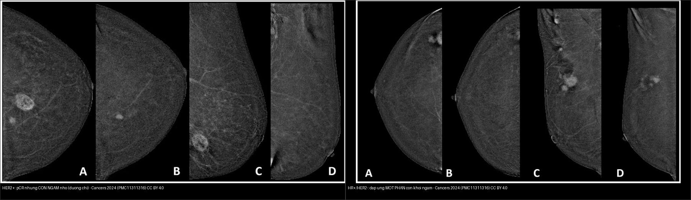
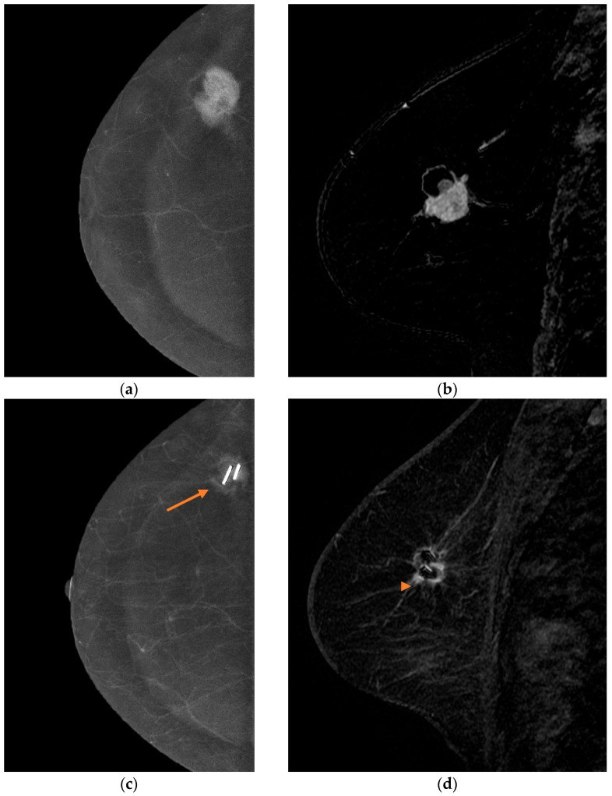
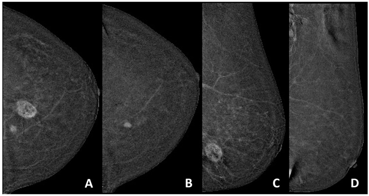
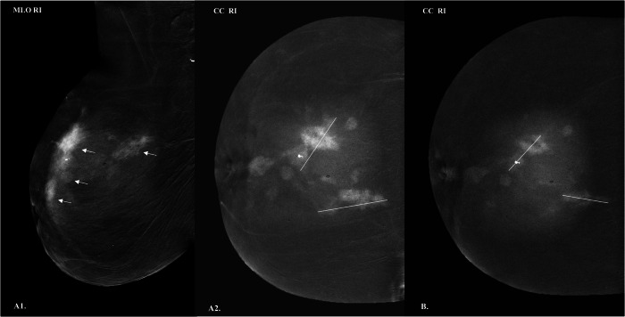
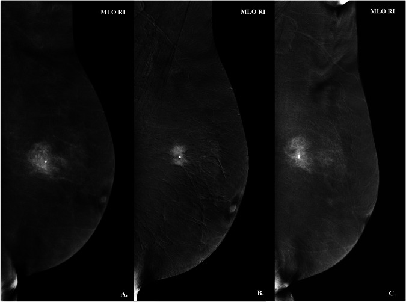
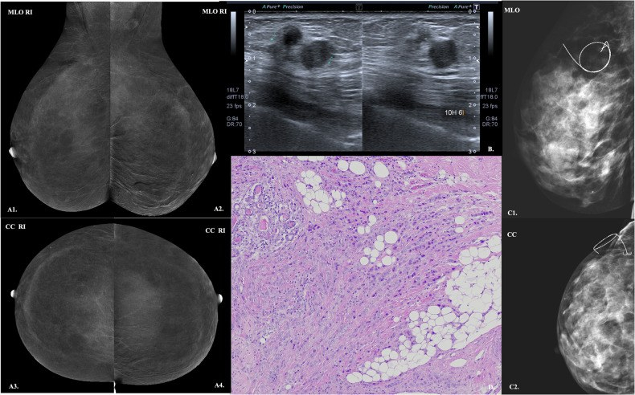
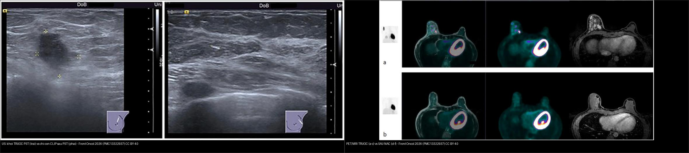

515 — Đánh giá đáp ứng vú sau hóa trị tân bổ trợ: MRI/CEM/siêu âm, pCR & phân loại đáp ứng (rCR/rPR) / Breast response assessment after neoadjuvant therapy
Tags: pattern:vu-sau-hoa-tri pattern:dap-ung-pCR vung:vu score:RECIST protocol:MRI-vu protocol:CEM protocol:US-vu
Mức chắc chắn (certainty): tổng hợp y văn (literature synthesis) — tự biên từ y văn mở (bài giáo dục CEM theo dõi NAT, so sánh CEM–MRI tiến cứu, meta-phân tích CEM, so sánh siêu âm–PET/MRI) kèm ca nguyên văn minh họa (ảnh CEM/MRI trước–sau, ca âm tính giả CEM); số liệu lấy trực tiếp từ bài gốc.
1. Tổng quan bệnh học – cơ chế hình ảnh
- Vì sao phải đánh giá đáp ứng: hóa trị tân bổ trợ (neoadjuvant chemotherapy/therapy — NAC/NAT) nhằm giảm giai đoạn (downstaging) để mổ bảo tồn thay vì đoạn nhũ, và cho biết sinh học u. Sau NAC, đáp ứng mô bệnh hoàn toàn (pathological complete response — pCR) định nghĩa là không còn ung thư xâm lấn trong vú và hạch (ypT0/is ypN0) — gắn với sống còn tốt hơn. Tỷ lệ pCR khác nhau rõ theo phân tử: 36,8% trong một loạt 174 ca (Vidali 2024), trong đó 57,1% số ca pCR là thể ba âm (TNBC); loạt tiến cứu 74 ca có pCR 31,1% (Acar 2026).
- TẠI SAO hình ảnh không "nhìn thấy" hết bệnh: pCR không đồng nghĩa ảnh bình thường. Sau điều trị có thể còn xơ hóa, viêm, mô hoại tử, phản ứng quanh clip gây ngấm thuốc giả (dương tính giả), trong khi DCIS tồn dư, ổ tiểu thùy (ILC), ổ vi thể nhỏ lại ngấm rất ít hoặc không ngấm → âm tính giả. Vì vậy "đáp ứng hình ảnh hoàn toàn" (rCR) không thay thế mô bệnh.
- Vật lý từng phương thức:
- MRI động có cản quang (DCE-MRI): u ác tân mạch rò rỉ → ngấm nhanh thì động mạch rồi thoát sớm (đường cong Type III washout / Type II plateau); DWI/ADC phản ánh mật độ tế bào (u sống ADC thấp; xơ/hoại tử ADC cao). MRI được coi là tiêu chuẩn tham chiếu (gold standard) cho đáp ứng — nhưng bỏ sót DCIS/ILC.
- Nhũ ảnh cản quang (contrast-enhanced mammography — CEM): dùng iod cản quang + hai mức năng lượng (dual-energy); iod có K-edge 33,2 keV → hiệu ứng quang điện làm tăng tương phản trong mô tuyến đặc, lọc bỏ mô tuyến. Ảnh tái hợp (recombined) hiển thị ngấm thuốc; rẻ, nhanh, hợp nơi không có MRI.
- Siêu âm (US): đo kích thước và định vị clip, nhưng phụ thuộc người làm và bỏ sót tổn thương không tạo khối; sau NAC clip-only có thể là dấu hiệu duy nhất còn lại.
- PET/MRI (¹⁸F-FDG): phản ánh chuyển hóa glucose (Warburg); hữu ích khi nghi di căn, nhưng không vượt trội MRI cho đáp ứng vú.
- Định lượng đối chiếu (số thật):
- CEM — meta 15 nghiên cứu/793 bệnh nhân (Galati 2026, La Radiologia Medica): Se 74% (KTC 66–81), Sp 82% (67–91), sROC AUC 0,83 (0,67–0,92), DOR 9,30 (4,15–20,83), I² 72,3% → "tương đương MRI".
- CEM vs MRI tiến cứu (Acar 2026, n = 74): CEM ước kích thước còn lại trong ±1 cm mô bệnh 84,7% so với MRI 76,4%; CEM Se 91,3% cho pCR (cao hơn MRI, p = 0,24), MRI Sp cao hơn.
- CEM theo phân tử (Vidali 2024, n = 174): chung Se 66,2%/Sp 75,2%/PPV 61,4%/NPV 78,8%; HR+/HER2− Sp 80,9%/NPV 91,7% cao nhất; TNBC Se 70%/PPV 73,7% cao nhất.
- US vs PET/MRI (Di Micco 2026, n = 143): US Se 59%/Sp 62% so với PET/MRI Se 62%/Sp 67% — không khác biệt (p = 0,93/0,94); US Se 73% ở TN nhưng chỉ 50% ở HER2+.
2. Mẫu hình + chẩn đoán phân biệt theo vị trí (Gamut)
- Không còn ngấm (rCR — radiologic complete response): rCR thật (pCR) vs còn DCIS/ILC không ngấm (âm tính giả) vs xơ hóa/hoại tử — hình ảnh giống nhau, chỉ mô bệnh chốt.
- Còn ngấm khu trú (rPR — radiologic partial response): u sống còn vs phản ứng quanh clip/dị vật vs viêm–xơ ngấm muộn vs thay đổi mô tuyến nền (BPE).
- Khối còn lại "đặc" mà không ngấm: mô xơ–sẹo (không u sống) — dễ bị đọc là "u còn" trên siêu âm/nhũ ảnh.
- Tổn thương không tạo khối (NME) còn lại: DCIS tồn dư rất hay gặp — MRI/CEM nhạy hơn nhưng không loại trừ được.
- Đáp ứng theo phân tử (định hướng đọc): TNBC/HER2+ đáp ứng mạnh, hay rCR (nhưng vẫn có thể còn ổ nhỏ); HR+/HER2− hay đáp ứng một phần, còn mô ngấm (Hình:
composite_pCR-vs-dap-ung-mot-phan). - Gợi nhớ tiếp cận 4 câu hỏi: (1) Còn ngấm không? → (2) Kích thước còn lại bao nhiêu? → (3) Còn NME/DCIS không? → (4) Hạch nách đáp ứng ra sao?
3. Bảng so sánh phân biệt (ma trận đối chiếu)
| Thực thể (entity) | Hình ảnh điển hình | Chốt vào (rule-in) | Chốt loại (rule-out) | Gợi ý xác nhận |
|---|---|---|---|---|
| pCR (đáp ứng hoàn toàn mô bệnh) | Không còn ngấm, có thể chỉ thấy clip/dấu vôi hóa | Không ngấm + không khối trên CEM/MRI | Còn NME/ngấm khu trú → nghĩ còn bệnh | Mô bệnh sau mổ là chốt; lấy clip + giường u |
| U tồn dư xâm lấn | Khối còn ngấm washout, DWI sáng/ADC thấp | Ngấm + ADC thấp + kích thước > 1 cm | Ngấm mờ, ADC cao, ổn định → nghi xơ/viêm | Sinh thiết/đánh dấu lại; đo theo ổ ngấm lớn nhất |
| DCIS tồn dư | NME phân thùy còn lại; có thể không ngấm trên MRI | NME phân thùy còn lại trên CEM/MRI | Không thấy NME không loại trừ DCIS | Cắt rộng/kiểm tra bờ; âm tính giả MRI hay gặp |
| Xơ–viêm sau điều trị | Khối "đặc" không ngấm hoặc ngấm mờ muộn, ổn định | Không ngấm / ADC cao / ổn định theo thời gian | Ngấm mạnh washout + to lên → nghi u sống | Đối chiếu phim trước–sau; mô bệnh |
| Phản ứng quanh clip | Ngấm dạng vòng quanh clip, nhỏ | Ngấm quanh đúng vị trí clip, không tạo khối | Ngấm lan/dày NME → nghĩ bệnh còn | So ảnh baseline; mô bệnh (bẫy dương tính giả) |
| Hạch nách đáp ứng | Hạch nhỏ lại, mất ngấm; có thể còn clip | Hạch về bình thường ± clip | Hạch còn ngấm/vỏ dày → còn bệnh | TAD/mô bệnh hạch clip (bài 589) |

Trái: HER2+ đạt pCR nhưng CEM sau NAT vẫn thấy ổ ngấm nhỏ (đường chỉ) — dương tính giả do phản ứng quanh clip, mô bệnh xác nhận hết bệnh. Phải: HR+/HER2− đáp ứng MỘT PHẦN, còn khối ngấm rõ trên CEM trước–sau. Nguồn: Cancers 2024 (PMC11311316), CC BY 4.0. Ảnh ghép letterbox.4. Protocol chụp + hệ phân độ/điểm chuẩn hóa
- Thời điểm: chụp nền tảng (baseline) trước NAC → giữa liệu trình (interim, sau ~2 chu kỳ) → trước mổ (trong ~2 tuần). Cùng một phương thức, cùng kỹ thuật để so sánh.
- MRI (DCE-MRI): T2W fat-sat + T1W động nhiều thì (trước/1–2–6 phút) + trừ ảnh (subtraction) + DWI/ADC + MIP; đo ổ ngấm lớn nhất, ghi kích thước và đường cong động học. Có thể rút gọn (abbreviated) để giảm thời gian/thể tích đọc (Chen 2026, n = 359: protocol rút gọn vẫn dự báo đáp ứng sau 2 chu kỳ).
- CEM: tiêm iod 1,5 mL/kg (350–370 mg I/mL), chụp 2 mức năng lượng trong cửa sổ ~10 phút, dựng ảnh tái hợp (recombined); đọc trước–sau NAC (Hình
515_CEM-va-MRI-truoc-sau). Chống chỉ định như cản quang iod (dị ứng, suy thận). - Siêu âm: đo kích thước + xác nhận clip; nhớ clip-only là dấu hiệu thường gặp của đáp ứng hoàn toàn trên US.
- Hệ phân độ/điểm:
- pCR: ypT0/is ypN0 — không còn xâm lấn ở vú và hạch.
- RECIST 1.1 (đáp ứng trên hình ảnh): đáp ứng hoàn toàn (CR) = mất mọi tổn thương đích; đáp ứng một phần (PR) = giảm ≥ 30% tổng đường kính; bệnh tiến triển (PD) = tăng ≥ 20% và ≥ +5 mm so nadir; còn lại là bệnh ổn định (SD).
- Phân loại đáp ứng hình–bệnh (radiologic–pathologic): rCR (hết ngấm) vs rPR (còn ngấm) — đối chiếu pCR/không pCR; không đồng nhất là quy luật, không phải ngoại lệ.
flowchart TD
A[Ung thu vu duoc chi dinh NAC] --> B[MRI/CEM nen tang + danh dau CLIP]
B --> C[NAC]
C --> D[Danh gia giua lieu trinh sau ~2 chu ky]
D --> E[MRI/CEM/US truoc mo]
E --> F{Con ngam / NME?}
F -->|Khong con ngam rCR| G[Nghi pCR - mo bao ton + lay giuong u/clip]
F -->|Con ngam khu tru rPR| H[Do kich thuoc con lai - quyet dinh bao ton vs doan nhu]
F -->|NME con lai| I[Nghi DCIS ton du - can cat rong]
G --> J[Mo benh - pCR?]
H --> J
I --> J
J -->|pCR| K[Theo doi - tien luong tot]
J -->|Khong pCR| L[Can nhac dieu tri bo tro + theo doi tai phat]
- Bảng ngưỡng xử trí nhanh:
| Tình huống | Ngưỡng / tiêu chuẩn | Xử trí |
|---|---|---|
| Không còn ngấm | rCR | Nghi pCR; mổ bảo tồn nếu đủ điều kiện |
| Còn ngấm > 1 cm | PR theo RECIST | Đo lại, cân nhắc kế hoạch mổ rộng |
| NME còn lại | Nghi DCIS | Cắt rộng/kiểm tra bờ |
| Ngấm quanh clip nhỏ | Nghi phản ứng | Không chốt dương tính — mô bệnh |
| CEM so với MRI | Se 74%/Sp 82% (meta) | CEM thay thế khi không MRI được |
5. Biến thể bình thường và cạm bẫy
- Âm tính giả của MRI/CEM: DCIS tồn dư và ILC ngấm rất ít → "hết ngấm" vẫn có thể còn bệnh; CEM có thể âm tính giả (Hình
515_CEM-am-tinh-gia). - Dương tính giả: phản ứng quanh clip, xơ–viêm, BPE tạo ngấm mờ sau NAT — ca HER2+ đạt pCR vẫn còn ổ ngấm nhỏ là ví dụ kinh điển.
- BPE thay đổi theo hormone/HRT/tamoxifen → đọc ngấm nền cẩn thận, tránh gọi là bệnh.
- Đo kích thước sai: mô xơ "đặc" không ngấm trên US/nhũ ảnh bị đo là u còn → đo theo ổ ngấm trên MRI/CEM, không theo bờ xơ.
- Thời điểm chụp: chụp quá sớm (trong/ngay sau chu kỳ) → ngấm viêm; chụp quá muộn sát mổ → không kịp đổi kế hoạch.
- Hạch nách: đáp ứng hạch không song hành đáp ứng vú; luôn đánh giá lại nách (bài 589).
- Clip/dấu vôi hóa: vôi hóa không mất dù pCR — đừng nhầm vôi còn lại là bệnh; X-quang bệnh phẩm xác nhận.
6. Tự lượng giá — Blind Quiz
Ca 1 — Nữ 56 tuổi IDC vú, CEM và MRI trước–sau NAC. Mô tả đáp ứng trước khi xem đáp án.

- Gợi ý lâm sàng (clinical context): ung thư biểu mô ống xâm lấn, đã NAC, đánh giá trước mổ.
- Câu hỏi: (a,b) cho thấy gì? (c,d) còn tổn thương không? Hai phương thức có đồng thuận?
Bấm để hiện đáp án (findings + chẩn đoán)
- Dấu hiệu (findings): (a) CEM tái hợp trước điều trị: khối ngấm rõ; (b) MRI trước: khối ngấm tương ứng; (c) CEM sau: clip (mũi tên) + còn ngấm nhỏ; (d) MRI sau: còn ổ ngấm khu trú quanh clip.
- Chẩn đoán (diagnosis): đáp ứng một phần (rPR) — còn mô ngấm sau NAC; CEM và MRI đồng thuận, cho thấy CEM có thể thay MRI. Còn ngấm → cần mô bệnh để loại u sống.
- Nguồn ảnh: Diagnostics 2026 (PMC12938973) Fig. 1, CC BY 4.0.
Ca 2 — Nữ trẻ HER2+, CEM sau NAT: còn một ổ ngấm nhỏ. Đây có phải bệnh còn? Hãy nghĩ trước khi mở đáp án.

- Hỏi: Ổ ngấm nhỏ còn lại nghĩa là gì? Vì sao dễ chẩn đoán nhầm?
Bấm để hiện đáp án (findings + chẩn đoán)
- Dấu hiệu (findings): (A,C) trước NAT: khối ngấm; (B,D) sau NAT: còn một ổ ngấm nhỏ ở phần tư trong-giữa (đường chỉ).
- Chẩn đoán (diagnosis): pCR (đáp ứng hoàn toàn mô bệnh) dù CEM còn ngấm — ổ ngấm là phản ứng quanh clip/xơ hóa, không phải u sống. Cạm bẫy dương tính giả: ngấm mờ nhỏ sau NAT không đồng nghĩa còn bệnh; chốt bằng mô bệnh.
- Nguồn ảnh: Cancers 2024 (PMC11311316) Fig. 1, CC BY 4.0.
Ca 3 — Nữ 66 tuổi, CEM theo dõi NAT. Đọc ảnh và nói vì sao CEM hữu ích ở vú đặc.

- Hỏi: Dấu hiệu chính? CEM giải quyết được hạn chế nào của nhũ ảnh thường?
Bấm để hiện đáp án (findings + chẩn đoán)
- Dấu hiệu (findings): ảnh CEM tái hợp trước và sau NAT cho thấy mức ngấm và kích thước tổn thương thay đổi; iod tăng tương phản trong mô tuyến đặc.
- Chẩn đoán (diagnosis): theo dõi đáp ứng NAT bằng CEM — hiệu ứng quang điện của iod (K-edge 33,2 keV) làm nổi mạch u trong vú đặc, nơi nhũ ảnh thường bị "nuốt". CEM tương đương MRI (meta: Se 74%/Sp 82%).
- Nguồn ảnh: Insights into Imaging 2026 (PMC13373129) Fig. 6, CC BY 4.0.

- Nguồn ảnh bổ sung: Insights into Imaging 2026 (PMC13373129) Fig. 10, CC BY 4.0.
Ca 4 — Nữ 47 tuổi có khối vú; CEM đọc là không còn bệnh nhưng mổ bệnh lại còn ung thư. Vì sao?

- Hỏi: Loại tổn thương nào hay gây âm tính giả trên CEM/MRI sau NAT?
Bấm để hiện đáp án (findings + chẩn đoán)
- Dấu hiệu (findings): hình minh họa ca âm tính giả của CEM kèm siêu âm và mô bệnh — CEM không bộc lộ hết bệnh mà mô bệnh xác nhận còn ung thư.
- Chẩn đoán (diagnosis): âm tính giả của CEM — hay gặp với DCIS tồn dư/ILC (ngấm ít). Bài học: "hết ngấm" không loại trừ bệnh còn; luôn đối chiếu US + mô bệnh.
- Nguồn ảnh: Insights into Imaging 2026 (PMC13373129) Fig. 5, CC BY 4.0.
Ca 5 — Nữ 43 tuổi TNBC, siêu âm và PET/MRI trước–sau PST. Phương thức nào chốt được đáp ứng?

- Hỏi: So sánh hai phương thức; vì sao không thể kết luận pCR chỉ bằng hình ảnh?
Bấm để hiện đáp án (findings + chẩn đoán)
- Dấu hiệu (findings): (US) khối trước PST → chỉ còn clip sau PST; (PET/MRI) ổ ngấm/FDG mạnh trước → giảm nhiều sau NAC.
- Chẩn đoán (diagnosis): đáp ứng tốt (rCR gợi ý pCR) — nhưng US Se 59%/Sp 62% và PET/MRI Se 62%/Sp 67% (không khác biệt, p = 0,93/0,94) → không đủ để chốt pCR. TNBC đáp ứng mạnh nên hay gặp rCR, nhưng vẫn phải mô bệnh.
- Nguồn ảnh: Frontiers in Oncology 2026 (PMC13322937) Fig. 3 & 4, CC BY 4.0.
Bài liên quan chéo
- 500 – Tổng quan Vú & Sản phụ khoa
- 514 – Ung thư vú: giai đoạn TNM & MRI đánh giá lan rộng
- 516 – Hình ảnh vú sau điều trị: sẹo vs tái phát, hoại tử mỡ & BIA-ALCL
- 517 – Sinh thiết định vị vú & quản lý clip/kẹp
- 589 – Sinh thiết hạch gác nách & TAD sau hóa trị tân bổ trợ
- 522 – Theo dõi sau điều trị ung thư vú
Ảnh
515_CEM-va-MRI-truoc-sau_PMC12938973-Fig1.jpg,515_CEM-pCR-con-ngam_PMC11311316-Fig1.jpg,515_CEM-dap-ung-mot-phan_PMC11311316-Fig2.jpg,515_CEM-am-tinh-gia_PMC13373129-Fig5.jpg,515_CEM-theo-doi-NAT_PMC13373129-Fig6.jpg,515_CEM-TN-dap-ung_PMC13373129-Fig10.jpg,515_US-truoc-sau_PMC13322937-Fig4.jpg,515_PET-MRI-truoc-sau_PMC13322937-Fig3.jpg,composite_pCR-vs-dap-ung-mot-phan.jpg,composite_US-vs-PET-MRI-truoc-sau.jpg. Nguồn + giấy phép từng ảnh trongimages/CREDITS.md.
Không dùng để chẩn đoán độc lập khi chưa có người hướng dẫn.